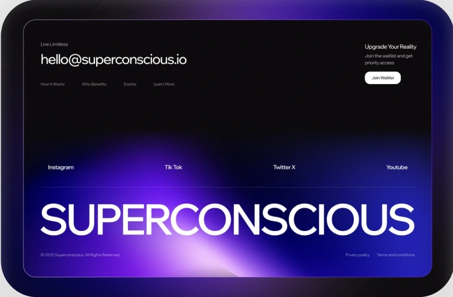
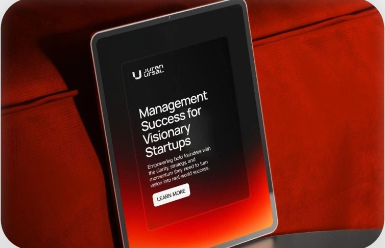

IT-компания CyberCore
Дизайн отдельных блоков сайта и участие в развитии визуального направления проекта.
Работа в команде под арт-дирекшеном.


Дизайн отдельных блоков сайта и участие в развитии визуального направления проекта.
Работа в команде под арт-дирекшеном.

Разработка дизайн-системы и отдельных блоков сайта сервиса аренды автомобилей.
Работа в команде под арт-дирекшеном.

Дизайн отдельных блоков сайта и участие в оформлении фирменных и печатных материалов.
Работа в команде под арт-дирекшеном.

Концепт бренда и сайта для экосистемы устройств умного дома.
Есть задача или идея? Давайте разберёмся, каким должен быть её дизайн.
Сначала я разбираюсь, что именно нужно сказать, кому и зачем. Изучаю продукт, аудиторию, конкурентов и контекст, а затем ищу идею, вокруг которой можно построить цельную визуальную систему.
Не каждое решение рождается из таблицы. В дизайне всегда остаётся место опыту, насмотренности и интуиции. Но если я предлагаю решение, я могу объяснить, зачем оно здесь и какую задачу помогает решить.
Показываю не только что предлагаю, но и почему. Если вижу более сильный вариант — покажу его и объясню разницу.
Ко мне необязательно приходить с идеальным ТЗ. Я задаю вопросы, помогаю собрать задачу и предлагаю варианты реализации.
Мне важно, чтобы шрифт, цвет, композиция, графика и взаимодействие пользователя говорили на одном визуальном языке.
Кому-то нужна максимальная прозрачность и регулярные созвоны, кому-то — короткие апдейты и минимум отвлечений. Формат коммуникации выбираем под проект.
Лендинги, корпоративные сайты, продуктовые страницы и digital-интерфейсы. От структуры и визуальной концепции до адаптивного дизайна.
Помогаю найти направление бренда и собрать цельный визуальный язык: типографику, цвет, графические приёмы и правила их использования.
Презентации, рекламные материалы, social media, печатные носители и другие точки контакта бренда.
Если задача не укладывается в одну категорию — всё равно расскажите о ней. Часто проекты находятся где-то между дисциплинами.
Вы рассказываете о проекте, задаче и ожиданиях. Я задаю вопросы и понимаю, чем могу помочь.
Изучаю продукт, аудиторию, конкурентов и контекст. Собираю направление и референсы.
Формулирую визуальную концепцию и показываю логику, на которой она строится.
Развиваю выбранное направление в полноценную систему и адаптирую её под необходимые носители.
Подготавливаю материалы, объясняю решения и помогаю корректно довести проект до запуска.
Сроки обсуждаем индивидуально после знакомства с задачей. Мне важно оставить в проекте пространство на исследование, поиск идеи и качественную реализацию, поэтому я не работаю в формате «нужно всё за три дня».
Я веб- и графический дизайнер. За три года успела поработать в дизайн-студиях, на фрилансе и внутри команды продукта.
Мне особенно интересны проекты на стыке дизайна, технологий и сильной визуальной коммуникации: digital-продукты, IT, образование, современные бренды и сервисы.
Я постоянно расширяю инструментарий — изучаю motion, AI, новые способы создавать сайты и визуальные системы. Но инструменты для меня всегда вторичны. В центре остаются идея и задача, которую нужно решить.
Для меня «дизайн с любовью» — это прежде всего неравнодушие к результату: желание разобраться глубже, предложить больше и сделать проект целостным.
Расскажите о проекте в нескольких предложениях. Я задам уточняющие вопросы и предложу, с чего лучше начать.
Обсудить проектСроки и стоимость обсуждаются индивидуально после знакомства с задачей.